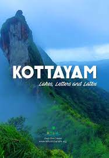
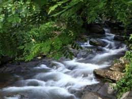
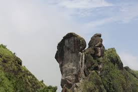

Kottayam district is famous for its rich heritage and literary tradition. It is renowned for its spice and rubber trade. Cradled by the backwaters and the Western Ghats, it is epitomised by its stretches of vast greenery, paddy fields and huge rubber plantations. Over five of the State’s leading newspaper publications originate from Kottayam. About four-fifth of books published in the State come from here as well. From trekking hotbeds like Nadukani and Kottathavalam to the rare avian life on display at the Kumarakom Bird Sanctuary, this district encompasses everything that God’s Own Country is famous for. Well connected to the entire State, it is full of interesting historical and cultural locations that tell the tale of how the district was forged into its current form.
| Elaveezhapoonchira | |
|---|---|
|  | Elaveezhapoonchira is a beautiful valley situated in Kottayam district. It extends to over several acres and lies at a height of around 3200 ft above sea level. Here there are many mountain ranges having rocky cliffs. It lies between the three hills Mankunnu, Kudayathoormala and Thonippara. The huge hills found here are Vindhyanmedu, Hidumbanmedu, Mankallumudi, Kolanimudi and Mukalanthumudi. The word meaning of Elaveezhapoonchira is ‘the valley where the leaves do not fall’. This place is named so because there are no trees in this place. It is the only place in Kerala where one can see both the sunrise and sunset from the same place. The horizon enables us to see around five districts from the top of it. During monsoon season, the view of the Malankara dam from here is a treat for the visitors. |
| Illikkal Kallu | |
|---|---|
|  | Located at a height of 6000 ft above the sea level in the Western Ghats of Kottayam, Kerala, Illikkal Kallu is a major tourist attraction and one of the most pristine spots in all of India. Situated in Moonnilavu Village, Meenachil taluk, the nearest city to the summit is Teekoy. Besides several other factors which make this peak unique, the most prominent feature is that half the boulder of the majestic rock has fallen apart. The remaining half stands sturdy and presents an extremely exalted picture. Surrounded by colossal green hills, the offbeat destination boasts of immaculate environs, enchanting panoramic vistas and an all around utopian atmosphere. In addition to the surreal natural beauty, the sublime view of the Arabian Sea in the near horizon as a thin blue stroke, is a sight beyond description. One of the highest peaks in the vicinity, Illikkal Kallu comprises of three different hills- each rising to at least 4000 ft above the sea level. Boasting of mystical surroundings, hills imbued with a green blanket and an overall idyllic setting, the destination is blessed with bounteous natural bliss and is still unexploited and untapped by tourism. Above all, the sunset view as seen from the peak is absolutely riveting; the moon rises adjacently as the orange sun goes down. Also, the winding roads leading to the majestic boulders can give an adrenaline rush to all the adventure junkies. |